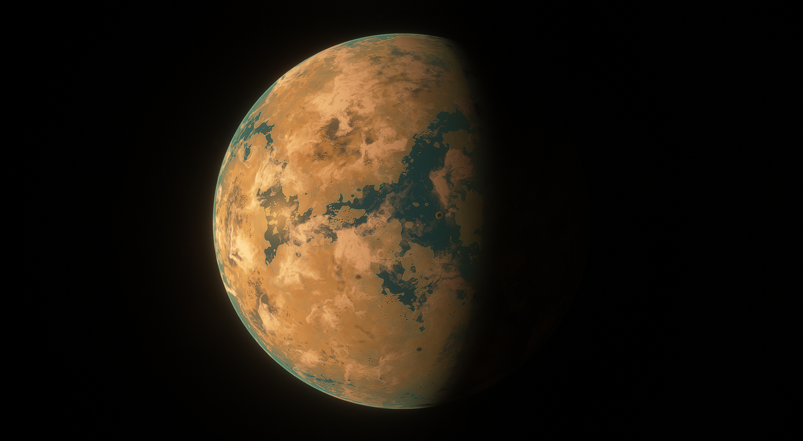
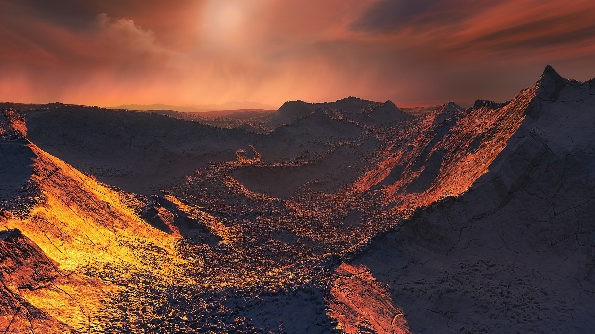

"In the vast expanse we proudly claim our home, We build to keep the dark from ever shown, Construct for peace, invent our future bright, Cherish the water, source of life's pure light."
 Planet: Vishapakar / Barnard's Star b
Planet: Vishapakar / Barnard's Star b
Moons: Tianlong, Karmir Sar, Vahagn, Shenlong, Dilong
 Distance from Sol: 5.87 Light Years
Distance from Sol: 5.87 Light Years
 Galaxy: Milky Way
Galaxy: Milky Way
 Constellation: Ophiuchus
Constellation: Ophiuchus
 Classification: Cool marine superterra
Classification: Cool marine superterra
 Goverment: Barnard Worker's Party | Communism
Goverment: Barnard Worker's Party | Communism
 Characteristics:
Characteristics:
Mass - 3.1115 Terran
Radius - 1.7975 TerraDiameter
Solar Day - 11.49 Hours
Orbital Period - 232 TerraMol
Gravity - 0.96301g
Atm pressure - 1.498 atm
Atmosphere Comp: N2, CO2
Description:
Vishapakar, translating to Dragon Stone also known as Long Shi, is the renamed exoplanet orbiting Barnard's Star, specifically identified as Barnard's Star b. This celestial body evolved into a thriving settlement following the arrival of an expedition aboard the Kepler-class interstellar cruiser model 2.
Vishapakar, despite its name's association with Armenian dragon mythology, presents a starkly contrasting reality as a desert planet shrouded in expansive oceans of saline water. The paradox of its arid surface overlaying substantial saltwater bodies renders the planet habitable in a unique manner. Settlers on Vishapakar have ingeniously adapted to this environment, constructing protective domes and structures to establish thriving communities shielded from the planet's harsh external conditions. Within these artificial habitats, life flourishes, creating a harmonious coexistence between the inhabitants and the desert landscape that defines Vishapakar's intriguing and distinctive character.

In the local stellar neighborhood, the residents of Vishapakar are widely recognized as a hardworking population oppressed by a dictatorial regime. The propaganda machine actively promotes outdated communist ideologies from Old Terra, exploiting the harsh conditions and unpredictable weather on the planet. Under this narrative, the people are convinced that relentless work is the key to realizing their aspiration of constructing a secure haven for future generations.
A commonly echoed sentiment among the Vishapakar populace is encapsulated in their poignant mantra: "Build to keep dark from coming, strong united Barnard's people." This rallying cry reflects their collective determination to overcome adversity through unity and industrious efforts, with the overarching goal of safeguarding their community against the challenges that loom ahead.
Vishapakar finds itself in a state of strained relations with the Solar System, rendering any appearance or diplomatic engagement seemingly impossible. In stark contrast, the Cetus Federal Republic actively supports Vishapakar in their pursuit of peace and a promising future. This stance has, however, faced criticism from the Martian Technate, which dismisses it as nonsensical. According to critics from Mars, it seems contradictory for Vishapakar to harbor animosity towards one solar system government while aligning with another, which they perceive as essentially identical in terms of oppressive practices. This contentious perspective highlights the complex and divisive nature of interstellar politics, with different factions voicing divergent opinions on the perceived alliances and conflicts within the stellar neighborhood
Culture:
Vishapakar's cultural heritage is deeply rooted in the ancient traditions of West and East Asia on Old Earth. The Capital City is a bustling hub of workspaces, tourist attractions, historical monuments, and distinguished restaurants. Visitors from distant stars flock to Vishapakar in search of an authentic culinary experience, as the absence of protein-like life necessitates a predominantly plant-based diet.
Notably, Vishapakar boasts the largest number of bars and strip clubs in the city, making its nightlife unparalleled compared to other factions. The vibrant atmosphere and diverse offerings make it a destination of choice for those seeking entertainment after dark.
The people of Vishapakar are united by the ideals of Old Earth Communism, which serves as a guiding force in their lives. Their collective dream is to establish a thriving settlement on a planet inherently hostile to their existence. However, this aspiration has faced challenges since the Andromeda Galaxy graciously provided a new home for all of humanity. As more individuals accept the Solar System's offer to resettle in the Kailen Star System, the dream of building a thriving settlement on an unwelcoming planet slowly fades away. Despite this shift, some still maintain a connection with the Milky Way through The Bridge, seeking to preserve the ties to their roots.
Economics: Market Socialism
Currency: ExoCredits
Industry: As a vital participant in the Settled Exoplanets Alliance, Vishapakar boasts a robust economy rooted in mineral extraction from its moons and a flourishing military industry. The TianLong Asteroid serves as the strategic hub for Vishapakar's Colony, functioning as a key military complex.
The ShenLong and DiLong Asteroids form an integral part of a cutting-edge scientific complex dedicated to the in-depth exploration of deep space. These asteroids serve as hubs for advanced research and study, focusing on unraveling the mysteries of the cosmos. The scientific endeavors conducted in these celestial bodies contribute significantly to our understanding of the vast expanse of the universe.
Planet's EcoSphere:
The inhospitable environment of Barnard's Star b, known as Vishapakar, presently poses insurmountable challenges for sustaining organic life as we understand it today. Despite these harsh conditions, geological studies have unveiled evidence suggesting the past existence of sizable creatures on Vishapakar, although the exact timeframe remains unknown.
Fascinatingly, the inhabitants of Vishapakar subscribe to the belief that these ancient life forms were, in fact, dragons that once roamed the planet. This perception adds a mythical and awe-inspiring dimension to the planet's history, as the people of Vishapakar draw connections between the formidable creatures of the past and the formidable challenges they face in the present. The notion of dragons, though rooted in the unknown and speculative, serves as a symbolic representation of resilience and strength in the face of adversity for the people of Vishapakar.
Major Locations:
Capital City: Zmeikirin.
Zmeikirin, the capital city of Vishapakar, stands as the largest and most developed urban center on the planet. Renowned for hosting the largest industrial workforce and boasting an impressive production rate, Zmaikirin is a testament to the resilience and ingenuity of its inhabitants. The city's architectural design is specifically tailored to withstand the challenges posed by high winds and saltwater rains, ensuring its durability in the face of adverse environmental conditions.
Functioning as a major social and economic trading hub, Zmeikirin plays a pivotal role in facilitating commerce on Vishapakar. The city's ship ports, constructed in various sizes, accommodate a diverse array of flagships and cargo ships, welcoming interstellar vessels to the planet. The Engineering Department within Zmeikirin offers comprehensive services, including upgrades and repairs, to the ships that make port in the city. This commitment to maritime infrastructure and expertise positions Zmeikirin as a crucial stop for spacefaring entities seeking efficient and reliable support for their vessels.
Orbital Ports: Longmen.
Longmen stands as largest orbital economic hub for miners and traders in or passing by Vishapakar, Station has all same comforts and services as Zmeikirin, sometimes the goverment even advises population to prefer orbital port over planetary city due to higher safety and quality. The station had habitat rings with green grass and trees brought from Nova and Earth, the rings rotation period of 20 seconds generate 4.9 g centrifugal force gravity with ring radius roughly 100+ meters
\[ 4.9 = \frac{4 \pi^2 \times 49.66}{20^2} \]
Longshi is now abandoned and inoperational due to Bombardment and Capture by Martian Technate during "Black Thunder" Siege of Barnard's Star